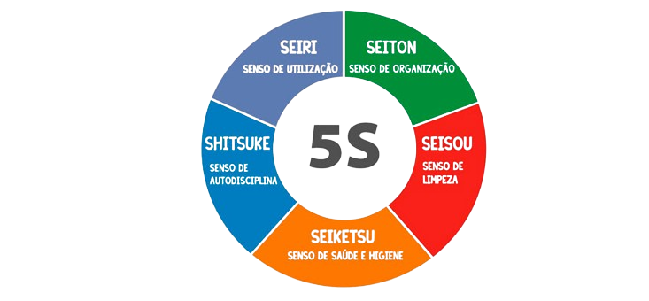
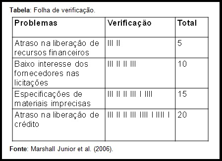
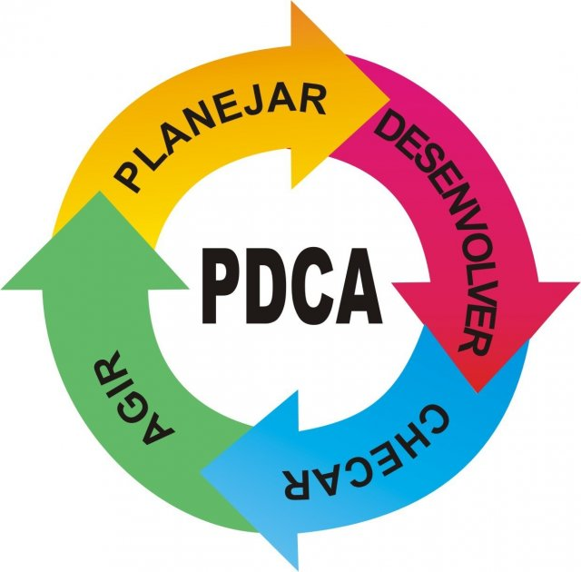
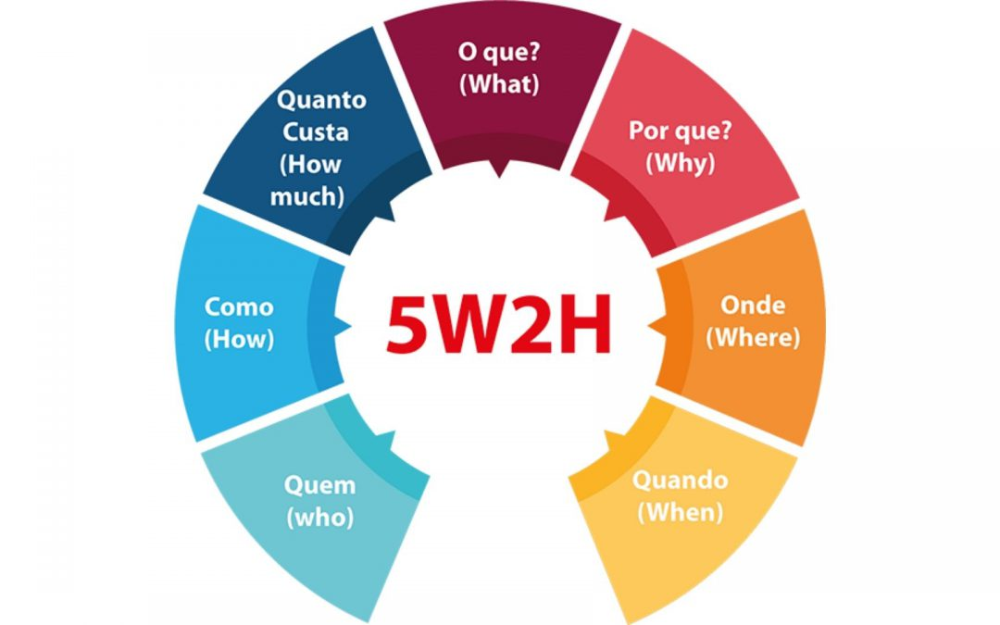
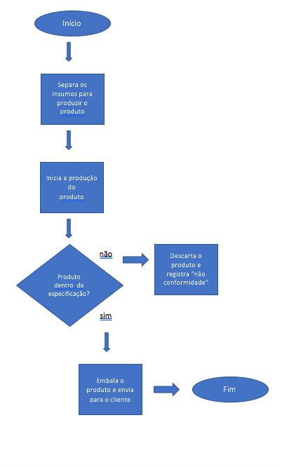
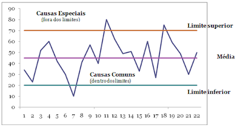
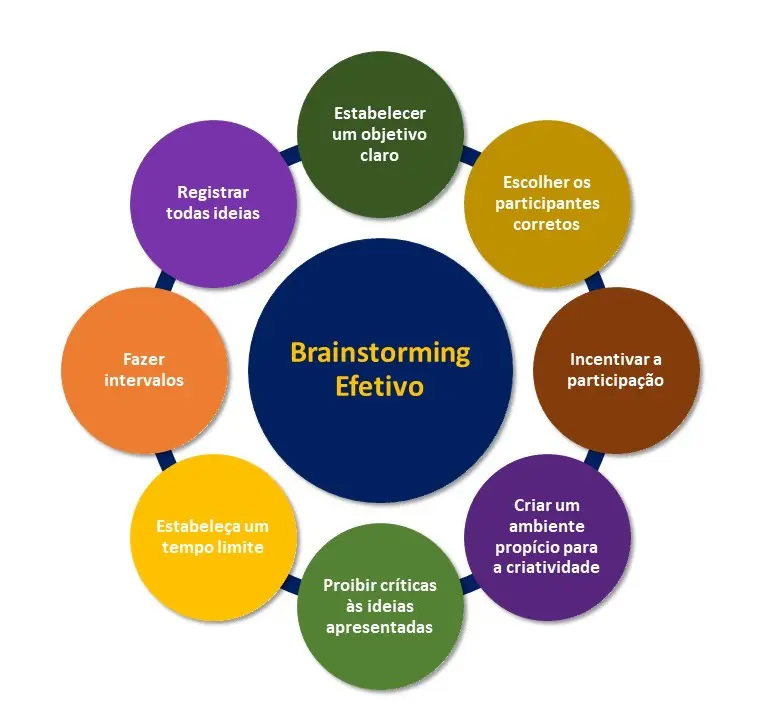
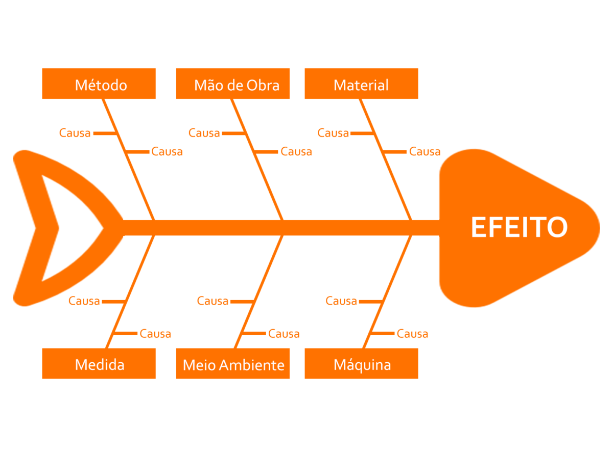
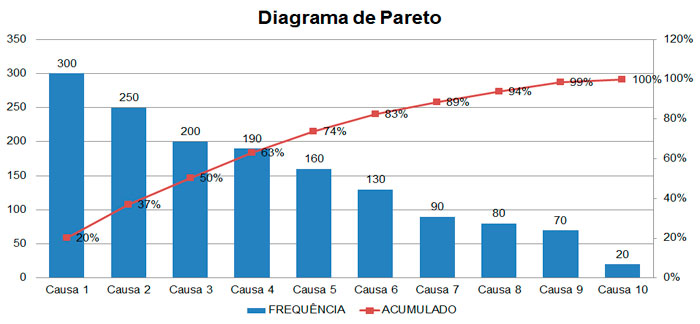

Ferramentas da Qualidade
Metodologia 5S
O 5S é um conjunto, desenvolvido no Japão, de cinco práticas destinadas a promover a organização, a limpeza e a eficiência no ambiente de trabalho. São elas:
Seiri (senso de utilização), Seiton (senso de ordenação), Seiso (senso de limpeza), Seiketsu (senso de padronização) e Shitsuke (senso de disciplina).

Metodologia de Folha de Verificação
As folhas de verificação são tabelas ou planilhas usadas para facilitar a coleta e análise de dados. O uso de folhas de verificação economiza tempo,
eliminando o trabalho de se desenhar figuras ou escrever números repetitivos. Além disso elas evitam comprometer a análise dos dados.

Metodologia Ciclo PDCA
O PDCA ou Ciclo de Deming é uma metodologia de gerenciamento que tem como objetivo a melhoria de processos de forma constante.
Esse ciclo se baseia em quatro etapas: planejar (plan), fazer (do), checar (check) e agir (act).

Metodologia 5W2H
O que é a ferramenta 5W2H? A ferramenta 5W2H é um conjunto de questões utilizado para compor planos de ação de maneira rápida e eficiente.
Seu principal propósito é a definição de tarefas eficazes e seu acompanhamento, de maneira visual, ágil e simples

Metodologia de Fluxograma
Um fluxograma de processo consiste na representação gráfica de um processo. A ideia é que, ao observar o desenho, uma pessoa consiga entender de maneira fácil a sequência com que as atividades ocorrem.
Para isso, utilizam-se elementos como formas geométricas, setas e descrições breves.

Metodologia de Controle Estatístico do Processo
O Controle Estatístico de Processo (CEP) é um método de medição e controle do processo de fabricação. O CEP é uma ferramenta essencial para controle de qualidade,
sendo eficaz para impulsionar a melhoria contínua e detectar um problema ou falha preventivamente.

Metodologia Benchmark
O benchmarking é usado por diversas organizações para melhorar o desempenho de uma maneira sistemática e lógica.
Ele estabelece um ponto de referência que permite às organizações realizarem avaliações comparativas que auxiliam na melhoria de produtos e processos.

Metodologia Brainstorm
O Brainstorming pode ser descrito como um metodologia geradora de ideias.
É uma prática bastante utilizada em diversas áreas organizacionais. Basicamente ele consiste em uma técnica dinâmica e eficiente onde os participantes colocam todas as suas ideias no papel. Tudo isso em é feito em um curto espaço de tempo.

Metodologia de Diagrama de Ishikawa
O Diagrama de Ishikawa, também conhecido como Diagrama Espinha de Peixe, é uma ferramenta que ajuda as pessoas a identificar possíveis causas para problemas.
Em linhas gerais, ele serve para analisar os processos, em diferentes perspectivas, relacionando causas potenciais para um determinado cenário.

Metodologia Diagrama de Pareto
O diagrama de Pareto é um gráfico de colunas que ordena as frequências das ocorrências, da maior para a menor, permitindo a priorização dos problemas,
procurando levar a cabo o princípio de Pareto, isto é, há muitos problemas sem importância diante de outros mais graves.
